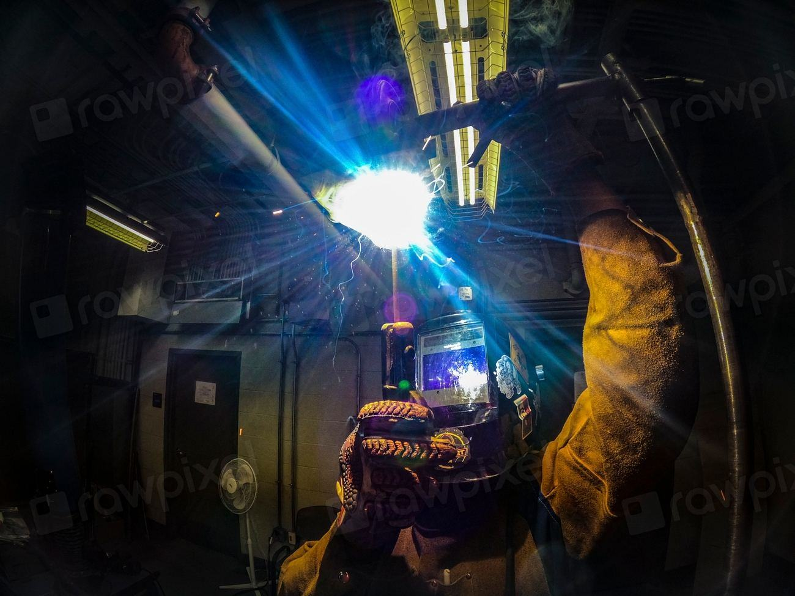
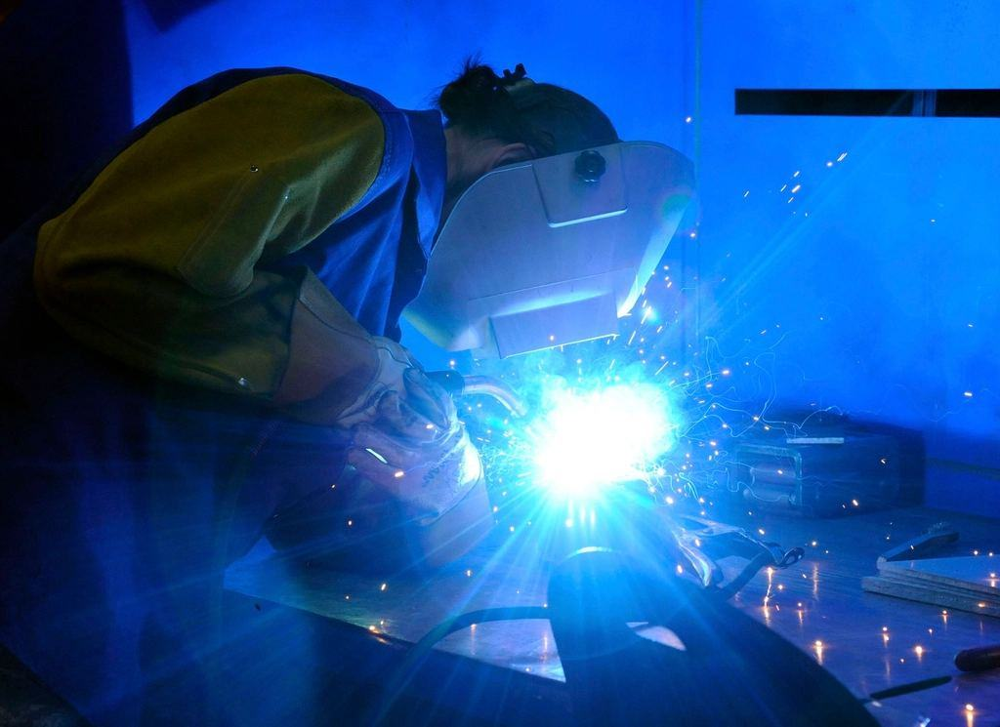

Priser
Tydliga priser utan överraskningar.
Villatrappor till fast pris
Rak trappa
Stålvangar och tretton steg i ek.
fr. 48 000 krinkl. montage- Lasermätning och 3D-ritning
- Räcke på en sida
- Steg i oljad ek
- Tio års garanti på stål
- Populärast
Kvartsvarvstrappa
Vanligast i villor med begränsat utrymme.
fr. 69 000 krinkl. montage- Lasermätning och 3D-ritning
- Räcke och handledare
- Steg i ek, ask eller björk
- Provmontage i verkstaden
Utvändig spiraltrappa
Varmförzinkad med gallerdurksteg.
fr. 59 000 krinkl. montage, 3 m höjd- Diameter 140 centimeter
- Räcke med fyllnadsstänger
- Plintar ingår
- Valfri RAL-kulör mot tillägg
Priserna gäller inom tio mil från Falun och inkluderar moms före ROT-avdrag.
Från trapphål till färdig trappa
- 1

Lasermätning
Vi mäter trapphålet med laser på en halvtimme och fotograferar anslutningarna.
- 2

3D-ritning
Inom en vecka får du en 3D-ritning och ett fast pris att ta ställning till.
- 3

Svets och provmontage
Trappan svetsas, provmonteras i verkstaden och ytbehandlas.
- 4

Montage på en dag
Montagelaget bär in, monterar och städar. Golven skyddas med kartong hela tiden.
När kan trappan vara på plats?
Sex till åtta veckor för villatrappor och spiraltrappor från godkänd ritning. Utrymningstrappor till skolor planerar vi gärna in under sommarlovet.
Vilka mått gäller för en trappa?
Boverkets regler kräver bland annat att stegen är jämna och att räcken finns där fallhöjden överstiger 50 centimeter. I praktiken ritar vi villatrappor med stegdjup runt 25 och steghöjd runt 18 centimeter.
Kan ni byta en befintlig trappa?
Ja. Vi demonterar den gamla och anpassar den nya efter trapphålet. Ofta går det på en dag.
Vilka träslag kan stegen ha?
Ek, ask och björk som standard, oljade eller lackade. Andra träslag offereras separat.
Gör ni hållfasthetsberäkningar?
Ja, för alla trappor. Utrymningstrappor och trappor i offentlig miljö levereras med beräkning enligt Eurokod 3 och CE-märkning.
Får jag ROT-avdrag?
Ja, på arbetskostnaden för montage i din bostad. Vi gör avdraget direkt på fakturan.